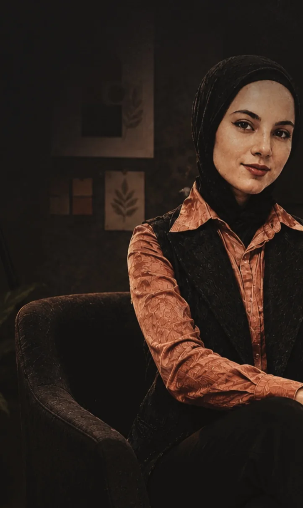
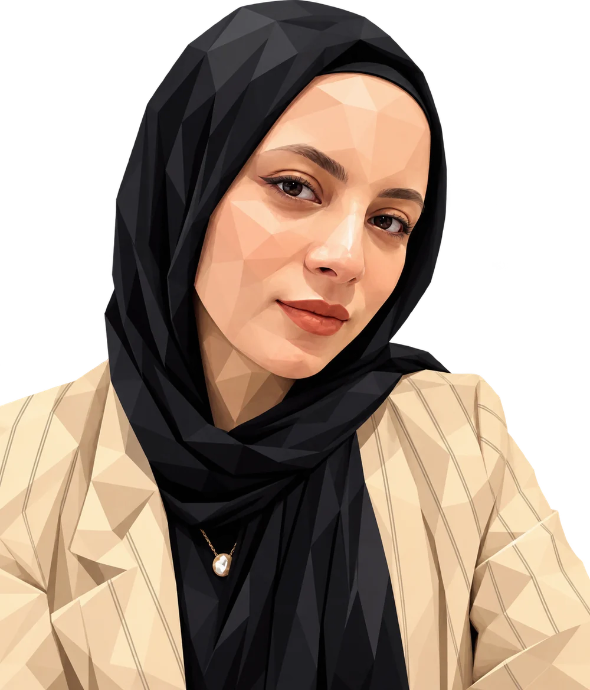

Portfolio · 2019—2026 · Jeddah, Saudi Arabia
Asma Othman
أسماء عثمان
Senior Graphic Designer · Junior Art Director
I build visual identities and campaigns with a clear point of view.
From the idea and creative direction to execution and motion. Seven years designing for brands across Saudi Arabia, the Gulf, Egypt and Turkey.
Services
- 01
Brand Identity & Logo Design
الهوية البصرية وتصميم الشعارات
- 02
Visual Identity Systems
أنظمة الهوية البصرية
- 03
Social Media Design
تصميم السوشيال ميديا
- 04
Marketing & Advertising Design
التصميم التسويقي والإعلاني
- 05
Print & Digital Design
تصميم المطبوعات والتصميم الرقمي
- 06
Packaging Design
تصميم التغليف
- 07
UI/UX Design
تصميم واجهات وتجربة المستخدم
- 08
AI-Assisted Design
التصميم بمساعدة الذكاء الاصطناعي
- 09
Creative Direction
الإدارة الإبداعية
Selected work
Motion & Editing
View all projectsReels, launch films and edited showcases, designed, animated and cut in After Effects and Premiere Pro.
Icon Real Estate
AI Creator · Saudi National Day Film
Icon Real Estate
ICON 18 montage: from render to reality
Icon Real Estate
ICON 18 project reel
Icon Real Estate
7 reasons to choose ICON 18
Icon Real Estate
30-second ad
Icon Real Estate
ICON 19 unit types
Icon Real Estate
Not every home is a choice
Icon Real Estate
Saudi National Day
Icon Real Estate
New project teaser
Brands I’ve Designed For
ICON Real Estate, Safari, Rashf, CareDrive, Zeina, Visory, Dallah Sukkar, Wasabi, 925 Club, Piattino Café, ZionHealth, Synexcell, YZDAD, Gate A, Koki's Beauty, Bassem El-Bahkery, Dating Boat, Awen, Brown House, Khawalid, Venue Hotel

About
I design brand identities, advertising and social campaigns, print, and motion for companies across Saudi Arabia and the Gulf. My work starts with the brief and the audience, and only then with the visuals.
Good design is not just seen. It is felt.More about me
All projects
- ICON Real Estate — Real Estate Marketing · 2026. Art direction for a Saudi real estate developer: I set up the brand's social media and lead how ICON looks across every channel, from ICON 18 in Al Nuzha to ICON 19 and ICON 21 in Al Safa, Jeddah.
- Safari — Brand Identity · 2026. A contemporary Saudi specialty coffee brand that celebrates the spirit of the journey and the joy of discovery. Inspired by desert dunes and their warm sunsets, it turns every cup into a stop along the road: a taste truly worth the journey.
- Rashf — Brand Identity · 2026. Café branding for a contemporary Arabic coffee shop: a modern, warm take on the coffee experience, from logo to cups, bags, storefront and social media.
- CareDrive — Brand Identity · 2026. Logo design for a child transportation platform for families who value safety, trust and peace of mind.
- Zeina — Brand Identity. Identity and packaging for a jewellery brand that celebrates femininity, softness and detail.
- Visory — Brand Identity · 2026. A brand guideline for Visory, a visual production brand: “Where Vision Becomes Story”.
- Dallah Sukkar — Social Media Design. A warm social media campaign for a Saudi dessert brand, pairing appetising imagery with playful Arabic headlines.
- AI Creator · Saudi National Day Film — AI Video Creation · 2026. A 46-second Saudi National Day ad film for Icon Real Estate, created entirely with AI: from a written concept and storyboard to generated scenes, animation and the final edit.
- Motion & Editing — Motion & Video Editing · 2026. All my motion and video work in one place: reels, montages and ads for Icon Real Estate, from ICON 18 in Al Nuzha to ICON 19 and new launches.
- Wasabi — Editorial & Print. Identity and menu design for a sushi restaurant that brings authentic Japanese flavours into a modern dining experience.
- 925 Club — Brand Identity · 2026. A sporty identity for 925 Club, applied to apparel, bags, bottles and gym content under the line “Together, we thrive from 9 to 5”.
- Piattino Café — Brand Identity. A friendly character-led identity and packaging for a café serving hot and cold drinks and cold food.
- ZionHealth — Social Media Design · 2025. Arabic social media posts for a natural skincare and haircare brand, each built around one product and its benefits.
- Product Campaigns — Advertising Campaigns. Commercial social designs for headphones, laptops and smartphones, built around one benefit and one clear call to action each.
- Government Infographics — Editorial & Print. Infographics on digital transformation, the entertainment sector, NEOM and the Saudi Green Initiative that turn dense figures into a clear visual story.
- Logo Collection — Brand Identity. A selection of logos for different industries: hospitality, beauty, mobility, marketing and more.